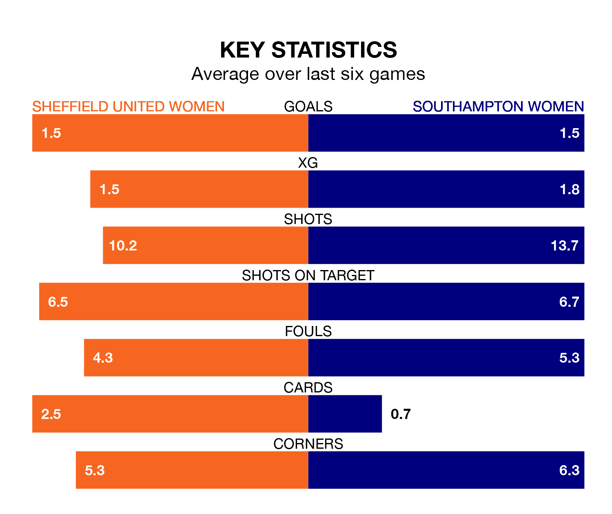

Sheffield United Women host Southampton Women on Sunday at Bramall Lane in the FA Women's Championship.
In their last league match, on January 21, Sheffield United lost to Sunderland Women 3-0 away.
Southampton won, 3-0 at home against Watford Women, with Sophia Pharoah (two) and Megan Collett on the scoresheet.
With 24 goals in 13 games so far this season, Southampton are the league's second-highest scorers with 1.8 goals per game. And they are conceding fewer than average, letting in 15 goals at a rate of 1.2 per game.
Sheffield United, meanwhile, are below average scorers, with 1.2 goals per game, compared to a league average of 1.4. They have conceded 1.6 goals per game.
In Isobel Goodwin, the Blades have one of the league's most on-form strikers so far this season. She has notched seven goals in 11 appearances, to sit second in the scoring charts.
Her goal rate of one every 133 minutes is slightly quicker than that of Pharoah, the Saints' top scorer with a goal every 108 minutes, and a total of six goals in 10 games.
The away side are fourth in the table after 13 games, of which they have won eight and lost five, earning 24 points.
The hosts are four places behind Southampton in eighth, with four wins and two draws putting them on 14 points.
Sheffield United are in mixed form in the FA Women's Championship, with two wins and a draw from their last six games.
With three wins and three losses over that period, Southampton's form is slightly better – they have taken nine points from 18, compared to Sheffield United's seven.
In the last three years, Sheffield United and Southampton have played each other on three occasions. Sheffield United won one of them and Southampton the other.
Their last meeting was on November 5, when Southampton won 2-1 at home.
Updated: 09:18 (UTC), 23/01/24